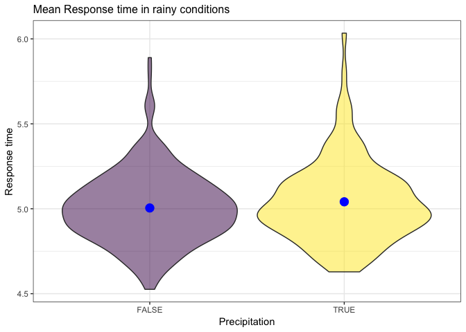
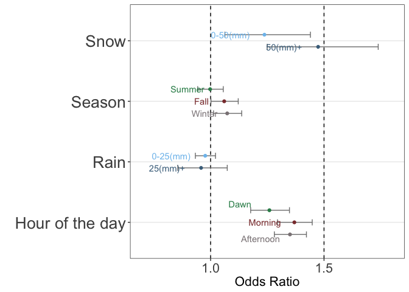

A major concern in emergency medical services (EMS) planning has been the need to minimize response time to better patient outcome, translated by some EMS operations into a goal of a response time of 8 minutes or less for advanced life support (ALS) units responding to life-threatening events. Several research results suggested there may be a small beneficial effect of response ≤7 minutes 59 seconds for those who survived to become an inpatient. More information on this can be found here and here
Therefore, to find out what factors are assoicated response time could be the first step to reduce the response time. Due to its large population, New York City requires a powerful, quick, well-equipped and effective Emergency Medical Service System. Hence, we explored the data of EMS response time in New York City in the year 2017 with respect to weather, time and street blockage.
We tried to answer the factors assoicated with EMS response time. We assumed rainy or snowy conditions, season and hour of the day will affect the response time.
Some of the questions that drove our analysis were:
How do season, hour of the day, rainy or snowly conditions affect the response time?
What other factors affect response time?
This study done in California county early this year challenges the commonly held assumption that ambulances are later to poor neighborhoods. This got us interested in exploring the relationship in emergency response time between a economically well off area - Upper West Side and a relatively poorer area such as Washington Heigths.
Incidents Responded to by Fire Companies: This dataset contains detailed information on incidents handled by FDNY Fire units and includes fire, medical and non-fire emergencies. For this project, we have filtered only EMS related data. The data is collected in the New York Fire Incident Reporting System (NYFIRS), which is structured by the FDNY to provide data to the National Fire Incident Reporting System (NFIRS). NFIRS is a modular all-incident reporting system designed by the U.S. Fire Administration. The original dataset contains 24 columns from which our aim outcome variable is response time which was obtained by subtracting incident time and arrival time. We are also interested in area(borough and zipcode) and street highway.
The New York City Weather Data
This dataset includes weather records of the city from 2014- 2018. We have restrcited our analysis to 2017 so the data was filtered accordingly. From this dataset, we have selected precipication, snow, snow depth and maximum and minimum temperatures everyday throughout the year.
Street Closure due to Construction data : This For this project, we were interested in how street closures in NYC affects the response time. For this, we have acquired DOT Street Closure Data. DOT Street Closure data identifies locations in the New York City Street Closure map where a street is subject to a full closure, restricting through traffic, for the purpose of conducting construction related activity on a City street. From this datset of 7 columns, we have filtered out work state and end date in 2017, on and from street and borough code for our interest.
Limitations of our analysis: response time ‘clock’ almost universally stops when the unit arrives in front of the address; in large office or apartment buildings, actually accessing the patient may take several minutes longer, but this is not considered in response time calculation or reporting.
incident_dat_2017 <-
read_csv('data/Incidents_Responded_to_by_Fire_Companies.csv',
col_types = "cicccicciccccccccccciccccccc") %>%
janitor::clean_names() %>%
#recode date/time
mutate(incident_date_time = mdy_hms(incident_date_time),
arrival_date_time = mdy_hms(arrival_date_time)) %>%
#select year 2017
filter(year(incident_date_time) == 2017,
incident_type_desc == "300 - Rescue, EMS incident, other") %>%
select(im_incident_key, incident_date_time, arrival_date_time,
street_highway:borough_desc) %>%
na.omit() %>%
# Added response time(minute) variable
# mutate(response_time = arrival_date_time - incident_date_time) %>%
mutate(response_time = difftime(arrival_date_time, incident_date_time, units = 'mins'),
# Added hour variable
hour = hour(incident_date_time),
date = date(incident_date_time),
# Added incident_month and incident_day variables from incident_date_time
incident_date = as.Date(incident_date_time)) %>%
separate(incident_date,
into = c("incident_year", "incident_month", "incident_day"),
sep = "-") %>%
select(-incident_year) %>%
mutate(incident_month = as.numeric(incident_month),
incident_day = as.numeric(incident_day),
zip_code = as.numeric(zip_code))
save(incident_dat_2017, file = "data/incident_dat_2017.RData")url = "https://www.health.ny.gov/statistics/cancer/registry/appendix/neighborhoods.htm?fbclid=IwAR3N4VlKC1OehRZyEuDYPEAE7AFAEXXIRC11seIBKxA-0fd3g4hL0QvnV20"
xml = read_html(url)
zip_code_table = (xml %>% html_nodes(css = "table")) %>%
.[[1]] %>%
html_table() %>%
janitor::clean_names() %>%
select(neighborhood, zip_codes) %>%
separate(zip_codes, c("a", "b", "c", "d", "e", "f", "g", "h", "i"),
sep = ",") %>%
gather(key = to_remove, value = zip_code, a:i) %>%
select(-to_remove) %>%
na.omit() %>%
distinct() %>%
mutate(zip_code = as.numeric(zip_code))
save(zip_code_table, file = "data/zipcode.RData")library(rnoaa)
nyc_weather_2017 =
rnoaa::meteo_pull_monitors("USW00094728",
var = c("PRCP", "TMIN", "TMAX", "SNOW", "SNWD"),
date_min = "2017-01-01",
date_max = "2017-12-31"
) %>%
mutate(tmin = tmin/10, tmax = tmax/10, prcp = prcp/10) %>%
select(-id)
save(nyc_weather_2017, file = "data/nyc_weather_2017.RData")# incident_dat_2017
finaldat =
left_join(incident_dat_2017, zip_code_table, by = "zip_code") %>%
inner_join(., nyc_weather_2017, by = "date") %>%
mutate(response_time = as.numeric(response_time))
save(finaldat, file = "data/finaldat.RData")
load('data/finaldat.RData')Given that data of response time is right skewed, for visulization, we took a mean of response time as our outcome for exploratory analysis And then performed exploratory data analysis.
finaldat %>%
group_by(hour) %>%
ggplot(aes(x = hour, y = response_time)) +
geom_smooth(se = FALSE) finaldat %>%
mutate(prcp = prcp > 0) %>%
group_by(date, prcp) %>%
summarise(mean_resp_time = mean(response_time)) %>%
ggplot(aes(x = prcp, y = mean_resp_time)) +
geom_violin(aes(fill = factor(prcp)), alpha = .5) +
stat_summary(fun.y = mean, geom = "point", size = 4, color = "blue") +
labs(
title = "Mean Response time in rainy conditions",
x = "Precipitation",
y = "Response time"
) +
viridis::scale_fill_viridis(
name = "Precipitation",
discrete = TRUE) +
theme(plot.title = element_text(size = 12),
strip.background = element_rect(fill = "black"),
strip.text = element_text(color = "white", face = "bold"),
legend.position = "None") 
finaldat %>%
mutate(snow = snow > 0) %>%
group_by(date, snow) %>%
summarise(mean_resp_time = mean(response_time)) %>%
ggplot(aes(x = snow, y = mean_resp_time)) +
geom_violin(aes(fill = factor(snow)), alpha = .5) +
stat_summary(fun.y = mean, geom = "point", size = 4, color = "blue") +
labs(
title = "Mean response time in snowy conditions",
y = "Mean response time",
x = "Snow"
) +
viridis::scale_fill_viridis(
name = "Snow",
discrete = TRUE) +
theme(plot.title = element_text(size = 12),
strip.background = element_rect(fill = "black"),
strip.text = element_text(color = "white", face = "bold"),
legend.position = "None") We showed some trends by hour of the day and by snowy conditions. Based on this result, we fit linear regression.
fit_hour = lm(response_time ~ hour, data = finaldat)
fit_hour %>%
broom::tidy() %>%
knitr::kable(digits = 3)| term | estimate | std.error | statistic | p.value |
|---|---|---|---|---|
| (Intercept) | 5.470 | 0.017 | 317.714 | 0 |
| hour | -0.034 | 0.001 | -29.176 | 0 |
Ho: different hour of the day makes no difference in logs response time. p-value: very small. conclusion: There is a difference of log response time in different time/hour of the day.
fit_snow = lm(response_time~snow, data = finaldat)
fit_snow %>%
broom::tidy() %>%
knitr::kable(digits = 3)| term | estimate | std.error | statistic | p.value |
|---|---|---|---|---|
| (Intercept) | 5.009 | 0.007 | 678.552 | 0 |
| snow | 0.003 | 0.000 | 7.456 | 0 |
fit_prcp = lm(response_time~prcp, data = finaldat)
fit_prcp %>%
broom::tidy() %>%
knitr::kable(digits = 3)| term | estimate | std.error | statistic | p.value |
|---|---|---|---|---|
| (Intercept) | 5.005 | 0.008 | 647.000 | 0 |
| prcp | 0.003 | 0.001 | 4.014 | 0 |
H0: There is no correlation between snow and log_response_time p-value: very small estimate: positive conclusion: There is a positive correlation between snow and log response time.
fit_mlr = lm(response_time~snow + prcp + tmax + tmin, data = finaldat)
fit_mlr %>%
broom::tidy() %>%
knitr::kable(digits = 3)| term | estimate | std.error | statistic | p.value |
|---|---|---|---|---|
| (Intercept) | 5.077 | 0.022 | 226.683 | 0.000 |
| snow | 0.002 | 0.000 | 4.539 | 0.000 |
| prcp | 0.002 | 0.001 | 2.830 | 0.005 |
| tmax | 0.000 | 0.003 | 0.123 | 0.902 |
| tmin | -0.008 | 0.003 | -2.742 | 0.006 |
Even though we could get the statistically significant results with p-values less than 0.05, the estimates are too small so explanations from this was not meaningful.
Next, we categorized explanatory variables since we wanted to show the change of response time by the trend of precipitation, snow, season and time rather than by detailed amount of precipitation and snow or specific time. With these modified variables, we performed exploratory data analysis.
prcp_eda =
finaldat %>%
mutate(prcp_ctg = fct_relevel(prcp_ctg, c("no_prcp", "low", "high"))) %>%
group_by(date, prcp_ctg) %>%
summarise(mean_resp_time = mean(response_time)) %>%
ggplot(aes(x = prcp_ctg, y = mean_resp_time)) +
geom_violin(aes(fill = prcp_ctg), alpha = .3) +
stat_summary(fun.y = mean, geom = "point", size = 2, color = "blue") +
labs(
title = "Rainy conditions",
y = "Mean response time(min)",
x = " "
) +
scale_x_discrete(labels = c("0(mm)", "0-25(mm)", "25(mm)+")) +
viridis::scale_fill_viridis(
name = "Precipitation",
discrete = TRUE) +
theme(plot.title = element_text(size = 12),
axis.title.y = element_text(size = 8),
axis.text.x = element_text(size = 9),
legend.position = "None")
snow_eda =
finaldat %>%
mutate(snow_ctg = fct_relevel(snow_ctg, c("no_snow", "low", "high"))) %>% group_by(date, snow_ctg) %>%
summarise(mean_resp_time = mean(response_time)) %>%
ggplot(aes(x = snow_ctg, y = mean_resp_time)) +
geom_violin(aes(fill = snow_ctg), alpha = .3) +
stat_summary(fun.y = mean, geom = "point", size = 2, color = "blue") +
labs(
title = "Snowy conditions",
y = "",
x = " "
) +
scale_x_discrete(labels = c("0(mm)", "0-50(mm)", "50(mm)+")) +
viridis::scale_fill_viridis(
name = "Snow",
discrete = TRUE) +
theme(plot.title = element_text(size = 12),
axis.title.y = element_text(size = 9),
axis.text.x = element_text(size = 8),
legend.position = "None")
prcp_snow = prcp_eda + snow_eda
ggsave("prcp_snow.png", plot = prcp_snow)season_eda =
finaldat %>%
mutate(season = fct_relevel(season, c("Spring", "Summer", "Fall", "Winter"))) %>%
group_by(date, season) %>%
summarise(mean_resp_time = mean(response_time)) %>%
ggplot(aes(x = season, y = mean_resp_time)) +
geom_violin(aes(fill = season), alpha = .3) +
stat_summary(fun.y = mean, geom = "point", size = 2, color = "blue") +
labs(
y = "Mean response time (min)",
x = " "
) +
viridis::scale_fill_viridis(
name = "season",
discrete = TRUE) +
theme(plot.title = element_text(size = 13),
axis.title.y = element_text(size = 10),
axis.text.x = element_text(size = 9),
legend.position = "None")
ggsave("season.png", plot = season_eda)hour_eda =
finaldat %>%
group_by(hour, season) %>%
ggplot(aes(x = hour, y = response_time, color = season)) +
geom_smooth(se = FALSE) +
scale_x_continuous(breaks = c(6, 12, 18),
labels = c("6am", "12pm", "18pm")) +
geom_vline(xintercept = c(6, 12, 18), color = "darkred") +
labs(
x = " ",
y = "Mean response time (min)"
) +
viridis::scale_color_viridis(
name = "Season",
discrete = TRUE)
theme(plot.title = element_text(size = 13),
axis.title.y = element_text(size = 10),
axis.text.x = element_text(size = 12),
legend.position = "None") ## List of 4
## $ axis.title.y :List of 11
## ..$ family : NULL
## ..$ face : NULL
## ..$ colour : NULL
## ..$ size : num 10
## ..$ hjust : NULL
## ..$ vjust : NULL
## ..$ angle : NULL
## ..$ lineheight : NULL
## ..$ margin : NULL
## ..$ debug : NULL
## ..$ inherit.blank: logi FALSE
## ..- attr(*, "class")= chr [1:2] "element_text" "element"
## $ axis.text.x :List of 11
## ..$ family : NULL
## ..$ face : NULL
## ..$ colour : NULL
## ..$ size : num 12
## ..$ hjust : NULL
## ..$ vjust : NULL
## ..$ angle : NULL
## ..$ lineheight : NULL
## ..$ margin : NULL
## ..$ debug : NULL
## ..$ inherit.blank: logi FALSE
## ..- attr(*, "class")= chr [1:2] "element_text" "element"
## $ legend.position: chr "None"
## $ plot.title :List of 11
## ..$ family : NULL
## ..$ face : NULL
## ..$ colour : NULL
## ..$ size : num 13
## ..$ hjust : NULL
## ..$ vjust : NULL
## ..$ angle : NULL
## ..$ lineheight : NULL
## ..$ margin : NULL
## ..$ debug : NULL
## ..$ inherit.blank: logi FALSE
## ..- attr(*, "class")= chr [1:2] "element_text" "element"
## - attr(*, "class")= chr [1:2] "theme" "gg"
## - attr(*, "complete")= logi FALSE
## - attr(*, "validate")= logi TRUEggsave("hour.png", plot = hour_eda)Accordingly, based on medical research, using a fact that 8min is a critical point, we categorized response time into binary outcome as less than 8min and over 8min.
finaldat =
finaldat %>%
mutate(prcp_ctg = fct_relevel(prcp_ctg, "no_prcp"),
snow_ctg = fct_relevel(snow_ctg, "no_snow"),
season = fct_relevel(season, "Spring"),
hour_of_day = fct_relevel(hour_of_day, "night"))
fit_logistic =
glm(over_8min ~ season + hour_of_day + snow_ctg + prcp_ctg,
family = binomial(), data = finaldat)
summary(fit_logistic)##
## Call:
## glm(formula = over_8min ~ season + hour_of_day + snow_ctg + prcp_ctg,
## family = binomial(), data = finaldat)
##
## Deviance Residuals:
## Min 1Q Median 3Q Max
## -0.4561 -0.3762 -0.3658 -0.3271 2.4710
##
## Coefficients:
## Estimate Std. Error z value Pr(>|z|)
## (Intercept) -2.959451 0.028609 -103.443 < 2e-16 ***
## seasonFall 0.058271 0.028900 2.016 0.04377 *
## seasonSummer -0.002128 0.028837 -0.074 0.94117
## seasonWinter 0.070643 0.029485 2.396 0.01658 *
## hour_of_dayafternoon 0.300029 0.026713 11.231 < 2e-16 ***
## hour_of_daydawn 0.230470 0.034634 6.654 2.84e-11 ***
## hour_of_daymorning 0.314235 0.028550 11.006 < 2e-16 ***
## snow_ctghigh 0.387983 0.084315 4.602 4.19e-06 ***
## snow_ctglow 0.212878 0.077437 2.749 0.00598 **
## prcp_ctghigh -0.042873 0.057984 -0.739 0.45967
## prcp_ctglow -0.024086 0.023208 -1.038 0.29936
## ---
## Signif. codes: 0 '***' 0.001 '**' 0.01 '*' 0.05 '.' 0.1 ' ' 1
##
## (Dispersion parameter for binomial family taken to be 1)
##
## Null deviance: 78187 on 167589 degrees of freedom
## Residual deviance: 77979 on 167579 degrees of freedom
## AIC: 78001
##
## Number of Fisher Scoring iterations: 5fit_logistic %>%
broom::tidy() %>%
mutate(OR = exp(estimate),
lower_CI_OR = exp(estimate - 1.96*std.error),
upper_CI_OR = exp(estimate + 1.96*std.error)) %>%
select(term, OR, lower_CI_OR, upper_CI_OR) %>%
mutate(term = c("intercept", "Fall", "Summer", "Winter", "Afternoon", "Dawn", "Morning", "snow 50+", "snow 50-", "prcp 25+", "prcp 25-")) %>% knitr::kable(digits = 3, "html") %>% kableExtra::kable_styling(bootstrap_options = c("striped", "hover"))| term | OR | lower_CI_OR | upper_CI_OR |
|---|---|---|---|
| intercept | 0.052 | 0.049 | 0.055 |
| Fall | 1.060 | 1.002 | 1.122 |
| Summer | 0.998 | 0.943 | 1.056 |
| Winter | 1.073 | 1.013 | 1.137 |
| Afternoon | 1.350 | 1.281 | 1.422 |
| Dawn | 1.259 | 1.177 | 1.348 |
| Morning | 1.369 | 1.295 | 1.448 |
| snow 50+ | 1.474 | 1.249 | 1.739 |
| snow 50- | 1.237 | 1.063 | 1.440 |
| prcp 25+ | 0.958 | 0.855 | 1.073 |
| prcp 25- | 0.976 | 0.933 | 1.022 |
OR_total_df =
fit_logistic %>%
broom::tidy() %>%
mutate(OR = exp(estimate),
lower_CI_OR = exp(estimate - 1.96*std.error),
upper_CI_OR = exp(estimate + 1.96*std.error)) %>%
select(term, OR, lower_CI_OR, upper_CI_OR) %>%
as.tibble() %>%
mutate(ctg = c("intercept",
"Season", "Season", "Season",
"Hour of the day", "Hour of the day", "Hour of the day",
"Snow", "Snow",
"Rain", "Rain"),
sub_ctg_chr = c("intercept",
"Fall", "Summer", "Winter",
"Afternoon", "Dawn", "Morning",
"50(mm)+", "0-50(mm)",
"25(mm)+", "0-25(mm)"),
sub_ctg = c("1", "2", "1", "3", "8", "6", "7", "5", "4", "5", "4")) %>%
filter(ctg != "intercept")
adj = .2 # This is used in position_nudge to move the dots
OR =
ggplot(OR_total_df, aes(x = OR, y = ctg, color = sub_ctg,
label = sub_ctg_chr)) +
geom_vline(aes(xintercept = 1), linetype = "dashed") +
geom_vline(aes(xintercept = 1.5), linetype = "dashed") +
geom_errorbarh(data = filter(OR_total_df, sub_ctg == "1"),
aes(xmax = upper_CI_OR, xmin = lower_CI_OR), height = .1,
color = "gray50",
position = position_nudge(y = adj)) +
geom_text(data = filter(OR_total_df, sub_ctg == "1"),
aes(label = sub_ctg_chr), colour = "seagreen4",
nudge_x = -.1, nudge_y = +.2, check_overlap = TRUE) +
geom_point(data = filter(OR_total_df, sub_ctg == "1"),
color = "seagreen4",
position = position_nudge(y = adj)) +
geom_errorbarh(data = filter(OR_total_df, sub_ctg == "2"),
aes(xmax = upper_CI_OR, xmin = lower_CI_OR), height = .1,
color = "gray50") +
geom_text(data = filter(OR_total_df, sub_ctg == "2"),
aes(label = sub_ctg_chr), colour = "indianred4",
nudge_x = -.1, nudge_y = 0, check_overlap = TRUE) +
geom_point(data = filter(OR_total_df, sub_ctg == "2"), color = "indianred4") +
geom_errorbarh(data = filter(OR_total_df, sub_ctg == "3"),
aes(xmax = upper_CI_OR, xmin = lower_CI_OR), height = .1,
color = "gray50", position = position_nudge(y = -adj)) +
geom_text(data = filter(OR_total_df, sub_ctg == "3"),
aes(label = sub_ctg_chr), colour = "lavenderblush4",
nudge_x = -.1, nudge_y = -.2, check_overlap = TRUE) +
geom_point(data = filter(OR_total_df, sub_ctg == "3"), color = "lavenderblush4",
position = position_nudge(y = -adj)) +
geom_errorbarh(data = filter(OR_total_df, sub_ctg == "4"),
aes(xmax = upper_CI_OR, xmin = lower_CI_OR), height = .1,
color = "gray50", position = position_nudge(y = +.1)) +
geom_text(data = filter(OR_total_df, sub_ctg == "4"),
aes(label = sub_ctg_chr), colour = "skyblue2",
nudge_x = -.15, nudge_y = +.1, check_overlap = TRUE) +
geom_point(data = filter(OR_total_df, sub_ctg == "4"),
color = "skyblue2",
position = position_nudge(y = +.1)) +
geom_errorbarh(data = filter(OR_total_df, sub_ctg == "5"),
aes(xmax = upper_CI_OR, xmin = lower_CI_OR),
height = .1,
color = "gray50", position = position_nudge(y = -.1)) +
geom_text(data = filter(OR_total_df, sub_ctg == "5"),
aes(label = sub_ctg_chr), colour = "skyblue4",
nudge_x = -.15, nudge_y = -.1) +
geom_point(data = filter(OR_total_df, sub_ctg == "5"),
color = "skyblue4",
position = position_nudge(y = -.1)) +
geom_errorbarh(data = filter(OR_total_df, sub_ctg == "6"),
aes(xmax = upper_CI_OR, xmin = lower_CI_OR),
height = .1,
color = "gray50",
position = position_nudge(y = adj)) +
geom_text(data = filter(OR_total_df, sub_ctg == "6"),
aes(label = sub_ctg_chr), colour = "seagreen4",
nudge_x = -.13, nudge_y = +.3, check_overlap = TRUE) +
geom_point(data = filter(OR_total_df, sub_ctg == "6"),
color = "seagreen4",
position = position_nudge(y = adj)) +
geom_errorbarh(data = filter(OR_total_df, sub_ctg == "7"),
aes(xmax = upper_CI_OR, xmin = lower_CI_OR),
height = .1,
color = "gray50") +
geom_text(data = filter(OR_total_df, sub_ctg == "7"),
aes(label = sub_ctg_chr), colour = "indianred4",
nudge_x = -.13, nudge_y = 0, check_overlap = TRUE) +
geom_point(data = filter(OR_total_df, sub_ctg == "7"),
color = "indianred4") +
geom_errorbarh(data = filter(OR_total_df, sub_ctg == "8"),
aes(xmax = upper_CI_OR, xmin = lower_CI_OR), height = .1,
color = "gray50", position = position_nudge(y = -adj)) +
geom_text(data = filter(OR_total_df, sub_ctg == "8"),
aes(label = sub_ctg_chr), colour = "lavenderblush4",
nudge_x = -.13, nudge_y = -.27, check_overlap = TRUE) +
geom_point(data = filter(OR_total_df, sub_ctg == "8"), color = "lavenderblush4",
position = position_nudge(y = -adj)) +
scale_x_continuous(breaks = c(1, 1.5),
limits = c(.7, 1.8)) +
labs(x = "Odds Ratio",
y = " ") +
theme_bw() +
theme(panel.grid.minor = element_blank(),
axis.title.x = element_text(size = 16),
axis.text.x = element_text(size = 16),
axis.text.y = element_text(size = 20),
legend.position = "None")
ggsave("OR.png", plot = OR, width = 45, height = 25, units = "cm")
OR
Based on EDA, to get statistical analysis, we fit logistic regression and results are followings: - Snow: As expected from EDA, compared to no snow conditions, odds of over 8min response time is increased 24% by 0~50mm snow and 47% by over 50mm snow. - Season: Compared to Spring, Summer does not affect odds of over 8min response time but odds is increased in Fall by 6% and in Winter by 7%. - Rain: Statistically significant result was not obtained from rain variable and it matches the result of EDA. - Hour of the day: In reference to night, odds of over 8min response time is increased at dawn by 26%, in the morning by 37% and in the afternoon by 35%.
When we wish to summarize the street closure data to get another variable to explain the response time, we realize that is pretty hard to do. Since the original street closure data is recorded based on street junctions, and there is not a zipcode variable included, we need to connect zipcode to every street junction in the dataset in order to merge it with the incident data. This required a lot of work, and thus we only did it with two neighborhood areas, the UWS and Washington Heights. We then matched the neighbourhood with the zip codes, for us to filter the selected neighborhood in both the incident and the street closure data to create a subset.
street_closure_2017 <-
read_csv('data/Street_Closures_due_to_construction_activities_by_Intersection.csv') %>%
janitor::clean_names() %>%
#recode date/time
mutate(work_start_date = mdy_hms(work_start_date),
work_end_date = mdy_hms(work_end_date),
work_time = round(difftime(work_end_date, work_start_date,
units = 'days'), 0)) %>%
#select year 2017
filter(year(work_start_date) == 2017) %>%
select(-purpose) %>%
na.omit() %>%
mutate(A = toupper(str_replace_all(onstreetname, fixed(" "), "")),
B = toupper(str_replace_all(fromstreetname, fixed(" "), "")))
save(street_closure_2017, file = "data/street_closure_2017.RData")#list of streets of intereste
street_zip <- read_excel('./data/street_junctions_zipcode.xlsx') %>%
#delete white space from street name
mutate(A = toupper(str_replace_all(street_A, fixed(" "), "")),
B = toupper(str_replace_all(street_B, fixed(" "), "")))
# Extract street closure data based on street_zip
#Merge A to A and B to B
first_set <- street_zip %>%
inner_join(street_closure_2017, by = c("A", "B"))
#Merge A to B and B to A
second_set <- street_zip %>%
inner_join(street_closure_2017, by = c("A" = 'B', 'B' = "A"))
street_closure_UWS_WH <- first_set %>%
bind_rows(second_set) %>%
select(street_A:neighborhood, work_start_date:work_time)
#Create function that checks the closure duration whether it happens while the call was made
check_street_closure <- function(datetime, zip){
#Filter only the zipcode of interest
zipcode_closure <- street_closure_UWS_WH %>%
filter(zipcode == zip) %>%
mutate(street_closed = ifelse(work_start_date < datetime & work_end_date > datetime, 1, 0))
if (sum(zipcode_closure$street_closed) > 0) {
return(1)
} else {return(0)}
}
#Then create variable street closure (y/n) in the incident_dat_2017 focusing on Washington heights and UWS
dat_subset <- finaldat %>%
filter(zip_code %in% c(10023, 10024, 10025, 10032, 10033, 10040))
#Down to 6065 observations
dat_subset$street_closed <- NA
for (i in 1:nrow(dat_subset)) {
dat_subset$street_closed[i] <-
check_street_closure(dat_subset$incident_date_time[i], zip = dat_subset$zip_code[i])
}
save(dat_subset, file = "data/subset_dat.RData")load('data/subset_dat.RData')
subset <- dat_subset %>%
#Only retain variables of interest
select(response_time, neighborhood, season:street_closed) %>%
#recode neightborhood (washington as opposed to Inwood + washington heights)
mutate(neighborhood = ifelse(neighborhood == 'Inwood and Washington Heights',
'Washington Heights', neighborhood)) %>%
mutate(prcp_ctg = fct_relevel(prcp_ctg, "no_prcp"),
snow_ctg = fct_relevel(snow_ctg, "no_snow"),
season = fct_relevel(season, "Spring"),
hour_of_day = fct_relevel(hour_of_day, "night"))
uws_dat <- subset %>% filter(neighborhood == 'Upper West Side')
fit_logistic_uws =
glm(over_8min ~ season + hour_of_day + snow_ctg + prcp_ctg + street_closed,
family = binomial(), data = uws_dat)
summary(fit_logistic_uws)##
## Call:
## glm(formula = over_8min ~ season + hour_of_day + snow_ctg + prcp_ctg +
## street_closed, family = binomial(), data = uws_dat)
##
## Deviance Residuals:
## Min 1Q Median 3Q Max
## -0.5427 -0.3986 -0.3577 -0.3198 2.8739
##
## Coefficients:
## Estimate Std. Error z value Pr(>|z|)
## (Intercept) -2.83346 0.19867 -14.262 <2e-16 ***
## seasonFall -0.47027 0.24973 -1.883 0.0597 .
## seasonSummer -0.22236 0.20141 -1.104 0.2696
## seasonWinter -0.01566 0.21217 -0.074 0.9412
## hour_of_dayafternoon 0.35631 0.18714 1.904 0.0569 .
## hour_of_daydawn 0.45071 0.25250 1.785 0.0743 .
## hour_of_daymorning 0.38077 0.20086 1.896 0.0580 .
## snow_ctghigh 0.44003 0.55488 0.793 0.4278
## snow_ctglow 0.28654 0.51052 0.561 0.5746
## prcp_ctghigh -1.27998 0.72319 -1.770 0.0767 .
## prcp_ctglow -0.01853 0.16096 -0.115 0.9084
## street_closed 0.20596 0.20845 0.988 0.3231
## ---
## Signif. codes: 0 '***' 0.001 '**' 0.01 '*' 0.05 '.' 0.1 ' ' 1
##
## (Dispersion parameter for binomial family taken to be 1)
##
## Null deviance: 1607 on 3386 degrees of freedom
## Residual deviance: 1589 on 3375 degrees of freedom
## AIC: 1613
##
## Number of Fisher Scoring iterations: 6wash_dat <- subset %>% filter(neighborhood == 'Washington Heights')
fit_logistic_wash =
glm(over_8min ~ season + hour_of_day + snow_ctg + prcp_ctg + street_closed,
family = binomial(), data = wash_dat)
summary(fit_logistic_wash)##
## Call:
## glm(formula = over_8min ~ season + hour_of_day + snow_ctg + prcp_ctg +
## street_closed, family = binomial(), data = wash_dat)
##
## Deviance Residuals:
## Min 1Q Median 3Q Max
## -0.6915 -0.3962 -0.3538 -0.3066 2.6222
##
## Coefficients:
## Estimate Std. Error z value Pr(>|z|)
## (Intercept) -2.8675 0.2322 -12.351 < 2e-16 ***
## seasonFall -0.2942 0.2297 -1.281 0.20016
## seasonSummer -0.1007 0.2254 -0.447 0.65490
## seasonWinter 0.1149 0.2244 0.512 0.60866
## hour_of_dayafternoon 0.4628 0.2221 2.084 0.03716 *
## hour_of_daydawn 0.2508 0.2926 0.857 0.39135
## hour_of_daymorning 0.5856 0.2269 2.581 0.00986 **
## snow_ctghigh 1.3078 0.6896 1.896 0.05791 .
## snow_ctglow -0.1308 0.6369 -0.205 0.83726
## prcp_ctghigh -0.8082 0.5062 -1.597 0.11035
## prcp_ctglow -0.3349 0.1971 -1.699 0.08934 .
## street_closed -0.1022 0.4760 -0.215 0.82994
## ---
## Signif. codes: 0 '***' 0.001 '**' 0.01 '*' 0.05 '.' 0.1 ' ' 1
##
## (Dispersion parameter for binomial family taken to be 1)
##
## Null deviance: 1277.1 on 2677 degrees of freedom
## Residual deviance: 1258.6 on 2666 degrees of freedom
## AIC: 1282.6
##
## Number of Fisher Scoring iterations: 5#Prepare table for visualization
table_results_uws <- fit_logistic_uws %>%
broom::tidy() %>%
mutate(OR = exp(estimate)) %>%
bind_cols(., exp(confint_tidy(fit_logistic_uws))) %>%
select(term, OR, conf.low, conf.high) %>%
filter(term != '(Intercept)') %>%
mutate(term = c("Fall", "Summer", "Winter", "Afternoon", "Dawn", "Morning", "snow 50+", "snow 50-", "prcp 25+", "prcp 25-", "Street closed"),
neightborhood = 'UWS') %>%
mutate(term = factor(term, levels = as.ordered(term)))
table_results_uws %>%
knitr::kable(digits = 3, "html") %>%
kableExtra::kable_styling(bootstrap_options = c("striped", "hover"))| term | OR | conf.low | conf.high | neightborhood |
|---|---|---|---|---|
| Fall | 0.625 | 0.380 | 1.013 | UWS |
| Summer | 0.801 | 0.538 | 1.187 | UWS |
| Winter | 0.984 | 0.647 | 1.489 | UWS |
| Afternoon | 1.428 | 0.994 | 2.074 | UWS |
| Dawn | 1.569 | 0.945 | 2.553 | UWS |
| Morning | 1.463 | 0.988 | 2.177 | UWS |
| snow 50+ | 1.553 | 0.446 | 4.154 | UWS |
| snow 50- | 1.332 | 0.435 | 3.348 | UWS |
| prcp 25+ | 0.278 | 0.045 | 0.899 | UWS |
| prcp 25- | 0.982 | 0.711 | 1.338 | UWS |
| Street closed | 1.229 | 0.818 | 1.854 | UWS |
table_results_wash =
fit_logistic_wash %>%
broom::tidy() %>%
mutate(OR = exp(estimate)) %>%
bind_cols(., exp(confint_tidy(fit_logistic_wash))) %>%
select(term, OR, conf.low, conf.high) %>%
filter(term != '(Intercept)') %>%
mutate(term = c("Fall", "Summer", "Winter", "Afternoon", "Dawn", "Morning", "snow 50+", "snow 50-", "prcp 25+", "prcp 25-", "Street closed"),
neightborhood = 'Washington Heights') %>%
mutate(term = factor(term, levels = as.ordered(term)))
table_results_wash %>%
knitr::kable(digits = 3, "html") %>%
kableExtra::kable_styling(bootstrap_options = c("striped", "hover"))| term | OR | conf.low | conf.high | neightborhood |
|---|---|---|---|---|
| Fall | 0.745 | 0.473 | 1.168 | Washington Heights |
| Summer | 0.904 | 0.580 | 1.408 | Washington Heights |
| Winter | 1.122 | 0.721 | 1.743 | Washington Heights |
| Afternoon | 1.589 | 1.035 | 2.480 | Washington Heights |
| Dawn | 1.285 | 0.713 | 2.261 | Washington Heights |
| Morning | 1.796 | 1.158 | 2.828 | Washington Heights |
| snow 50+ | 3.698 | 0.790 | 12.905 | Washington Heights |
| snow 50- | 0.877 | 0.202 | 2.666 | Washington Heights |
| prcp 25+ | 0.446 | 0.144 | 1.083 | Washington Heights |
| prcp 25- | 0.715 | 0.480 | 1.041 | Washington Heights |
| Street closed | 0.903 | 0.311 | 2.087 | Washington Heights |
OR_UWS =
ggplot(table_results_uws, aes(x = term, y = OR)) +
geom_hline(aes(yintercept = 1), size = 1, linetype = "dashed") +
geom_pointrange(aes(ymin = conf.low, ymax = conf.high)) +
coord_flip()
OR_WASH =
ggplot(table_results_wash, aes(x = term, y = OR)) +
geom_hline(aes(yintercept = 1), size = 1, linetype = "dashed") +
geom_pointrange(aes(ymin = conf.low, ymax = conf.high)) +
coord_flip()
OR_all <-
table_results_uws %>% bind_rows(table_results_wash) %>%
ggplot(., aes(x = term, y = OR, colour = neightborhood)) +
geom_hline(aes(yintercept = 1), size = 1, linetype = "dashed") +
geom_pointrange(aes(ymin = conf.low, ymax = conf.high),
position = position_dodge(width = 0.30)) +
coord_flip() +
xlab('') +
ylab('Odds ratio')
ggsave("OR_all.png", plot = OR_all, width = 45, height = 25, units = "cm")
OR_allOn UWS, high precipitation is associated with lower odds of response times greater than 8 minutes. Street closure is associated with the outcome but not statistically significant. Washington Heights, on the other hand, saw afternoon and morning time, compared to the night time as reference, as contributing factors to the response time greater than 8 minutes with ORs 1.6 and 1.8, respectively.
fit_logistic_neighbor =
glm(over_8min ~ season + hour_of_day + snow_ctg + prcp_ctg + street_closed + neighborhood, family = binomial(), data = subset)
summary(fit_logistic_neighbor)##
## Call:
## glm(formula = over_8min ~ season + hour_of_day + snow_ctg + prcp_ctg +
## street_closed + neighborhood, family = binomial(), data = subset)
##
## Deviance Residuals:
## Min 1Q Median 3Q Max
## -0.6117 -0.3945 -0.3562 -0.3119 2.7517
##
## Coefficients:
## Estimate Std. Error z value Pr(>|z|)
## (Intercept) -2.86464 0.15912 -18.003 < 2e-16 ***
## seasonFall -0.37896 0.16624 -2.280 0.02263 *
## seasonSummer -0.18311 0.14944 -1.225 0.22048
## seasonWinter 0.05325 0.15168 0.351 0.72553
## hour_of_dayafternoon 0.40097 0.14289 2.806 0.00501 **
## hour_of_daydawn 0.36221 0.19103 1.896 0.05795 .
## hour_of_daymorning 0.47460 0.14988 3.167 0.00154 **
## snow_ctghigh 0.77128 0.42623 1.810 0.07036 .
## snow_ctglow 0.09757 0.39631 0.246 0.80553
## prcp_ctghigh -0.89831 0.39781 -2.258 0.02394 *
## prcp_ctglow -0.15267 0.12436 -1.228 0.21959
## street_closed 0.13713 0.16726 0.820 0.41232
## neighborhoodWashington Heights 0.04894 0.11289 0.434 0.66464
## ---
## Signif. codes: 0 '***' 0.001 '**' 0.01 '*' 0.05 '.' 0.1 ' ' 1
##
## (Dispersion parameter for binomial family taken to be 1)
##
## Null deviance: 2884.1 on 6064 degrees of freedom
## Residual deviance: 2853.0 on 6052 degrees of freedom
## AIC: 2879
##
## Number of Fisher Scoring iterations: 6fit_logistic_neighbor %>%
broom::tidy() %>%
mutate(OR = exp(estimate)) %>%
bind_cols(., exp(confint_tidy(fit_logistic_neighbor))) %>%
select(term, OR, conf.low, conf.high) %>%
filter(term != '(Intercept)') %>%
mutate(term = c("Fall", "Summer", "Winter", "Afternoon", "Dawn", "Morning", "snow 50+", "snow 50-", "prcp 25+", "prcp 25-", "Street closed", "Washington Heights"))## # A tibble: 12 x 4
## term OR conf.low conf.high
## <chr> <dbl> <dbl> <dbl>
## 1 Fall 0.685 0.493 0.947
## 2 Summer 0.833 0.621 1.12
## 3 Winter 1.05 0.783 1.42
## 4 Afternoon 1.49 1.13 1.98
## 5 Dawn 1.44 0.981 2.08
## 6 Morning 1.61 1.20 2.16
## 7 snow 50+ 2.16 0.863 4.70
## 8 snow 50- 1.10 0.471 2.27
## 9 prcp 25+ 0.407 0.170 0.825
## 10 prcp 25- 0.858 0.670 1.09
## 11 Street closed 1.15 0.822 1.58
## 12 Washington Heights 1.05 0.841 1.31Washington Heights has 1.05 times the odds of response time greater than 8 minutes compared to UWS. However the observed effect is not statistically significant.
As we first tried the linear regression we found out that despite the significant p value, the estimate of the variables are very small. We wanted to change to another statistical method to get relatively meaningful result. We summarize the continuous response time in to binary outcomes, about whether it is higher than 8 mins or not. We also categorized the snow and prcp into binary variables. The model we chose is here: \[ \begin{aligned} &logit(P(response\space time > 8 min))\\ &= \beta_{0} + \beta_{1}I(season = Fall) + \beta_{2}I(season = Summer) + \beta_{3}I(season = Winter) \\ & + \beta_{4}I(hour\space of \space day = afternoon) + \beta_{5}I(hour\space of \space day = dawn) + \beta_{6}I(hour\space of \space day = morning) \\ & + \beta_{7}I(snow = 50mm+) + \beta_{8}I(snow = 50mm-) + \beta_{9}I(prcp = 25mm+) + \beta_{10}I(prcp = 25mm-) \end{aligned} \] In the Odd Ratio table generated from the code in the above section, we found out that * As expected from EDA, compared to no snow conditions, odds of over 8min response time is increased 24% by 0~50mm snow and 47% by over 50mm snow. * In summary of the effect of seasons, compared to Spring, Summer does not affect odds of over 8min response time but odds is increased in Fall by 6% and in Winter by 7%. * For the rainy condition, statistically significant result was not obtained from prcp variable and it matches the result of EDA. * Furthermore, in reference to night, odds of over 8min response time is increased at dawn by 26%, in the morning by 37% and in the afternoon by 35%. It seems like the emergency service in our city is more or less affected by snowy condition, and somewhat delayed in the morning.
On the other hand, we have construct logistic analysis on our subset filtered with neighborhood area variables, UMS, and Washington Heights in specific based on the paper published earlier this year in California county that challenges the commonly held assumption that ambulances are later to poor neighborhoods. This got us interested in exploring the relationship in emergency response time between a economically well off area - Upper West Side and a relatively poorer area such as Washington Heigths. On Upper West Side, high precipitation is associated with lower odds of response times greater than 8 minutes. What’s interesting here is why? Street closure is associated with the outcome but not statistically significant. Washington Heights, on the other hand, saw afternoon and dawn time, compared to the night time as reference, as contributing factors to the response time greater than 8 minutes with ORs 1.6 and 1.3, respectively. Again street closure is not predictive of the outcome. The null result from street closure could be due to either linking street closure to the zip code in this case is too broad or street closure did not really play a role in our response time.
We also fitted the model with neighborhood as predictor variable and found that Washington Heights had 1.05 times the odds of response time greater than 8 minutes compared to the Upper West Side. However the observed effect is not statistically significant. At least we can be rest assured whether where we live, we still receive equal treatment from the emergency dispatcher.
We found out that in snowy conditions, the odds of over 8min response increases while rainy rainy conduition does not effect on the outcome. Along with this result, the odds of over 8min response increased in winter and it may be linked to snow factor. Also, response time was also affected by when the event happened. We tried to connect these results with the traffic such because we expected that if traffic is heavier due to snow or when response happened, the response time will be delayed. But it was hard to visulize this expectation due to the difficulty of matching the location of event and the traffic. From our results, we can recommend the plan such as assigning more ambulances in snowy conditions and during the day.